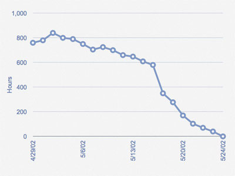

| 工件：冲刺燃尽图 |
 |
|
用途
Scrum团队使用它来测量当前冲刺（sprint）的进展。 |
关系
描述
| 主要描述 | 在冲刺期间，每天都需要进行剩余工作的估算，并将估算的结果用图形的方式予以表达，这就是冲刺燃尽图。 燃尽图中，纵轴表示当前冲刺中的剩余工时。 横轴表示冲刺的日子。 燃尽线从冲刺（sprint）开始时的小时数（工作总量）逐日下降到冲刺结束时为0。  团队尽全力冲刺完成适量的工作，但有时在Sprint 计划会议中被放入了过多或过少的工作，此时需要团队增加或删除任务。 从上面的冲刺燃尽图中,可以看到团队在初始时“拉”入了过多的工作，在2002年5月16日时，仍就剩余近600个小时的工作。 在这种情况下，产品负责人被询问是否同意在当前冲刺（sprint）中删除一部分工作，这导致在上图中5/16/02(619小时)和5/17/02之间出现大幅的落差。 在那之后，团队取得了良好一致的进展，并成功完成了本次冲刺。 |
|---|
图示
| 模板 |
|---|
This program and the accompanying materials are made available under the
Copyright © 1998--2008 Mountain Goat Software. All rights reserved. |